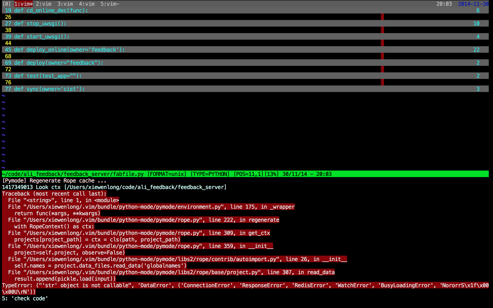

| 命令 | 作用 | 例子 | 例子说明 |
|---|---|---|---|
| map | 绑定vim快捷键 | :map <F5> i{<Esc>ea}<Esc> | 按F5 把 abc ==> {abc} |
首先查看本机vim是否支持unicode编码, 可以执行:
:version
来查看 是否有 +multi_byte 选项，如果没有，说明编译vim的时候，没有加 入 –with-features=big
vim 插件安装容易，卸载麻烦。 vundle 是一款vim 插件，利用它可以管理其他vim插件, 让更新、卸载plugin变的容易.
在github 上搜索要安装的plugin名. 把插件写在~/.vimrc 中:
Plugin 'msanders/snipmate.vim'
执行安装命令:
:PluginInstall
插件就自动安装了. 如果想搜索插件, 执行:
:PluginSearch! <插件名>
列出已经安装的插件:
:PluginList
原理
安装Vundle后，需要在 vimrc 中添加以下配置:
set rtp+=~/.vim/bundle/Vundle.vim "修改vim 的runtimepath
call vundle#begin() "调用初始化函数(主要是定义一些命令，但没有调用)
Plugin 'gmarik/Vundle.vim' "调用自定义的命令 Plugin, 把管理的插件，加入自己维护的变量中
Plugin 'msanders/snipmate.vim'
Plugin 'scrooloose/nerdtree'
Plugin 'klen/python-mode'
call vundle#end() "遍历插件列表(由上几行定义), 把这些插件路径加入 runtimepath
filetype plugin indent on
综上， Vundle 主要是维护了一个插件列表， 启动vim的时候，把每个插件的路径，加入到vim 的runtimepath, 其他的交给插件自己定义
根据文件扩展名， 进行代码片段补全. 只需要在 ~/.vim/bundle/snipmate.vim/snippets/ 目录下创建响应的 xxx.snippets 文件， 在里面自定义片段即可
python 代码检测, rope支持等功能
python-mode 插件本身也是用python写的(vim 自身可以解析python, 因为编译的时候有+python feature), 有时候python脚本会出问 题，要调试的话，在vimrc中加入:
g:pymode_debug = 1
曾遇到一个问题， 保存py文件的时候，报错:
是因为rope会初始化项目下所有py文件， 由于这个项目下包含python整个目录，所以相对很大，导致rope初始化的.ropeproject文件有问题， 解决的办法是禁用rope(因为使用rope太慢了, 要遍历整个python目录)